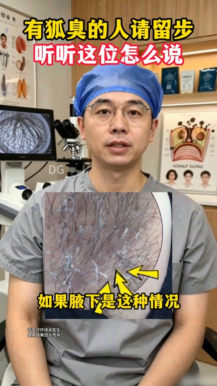
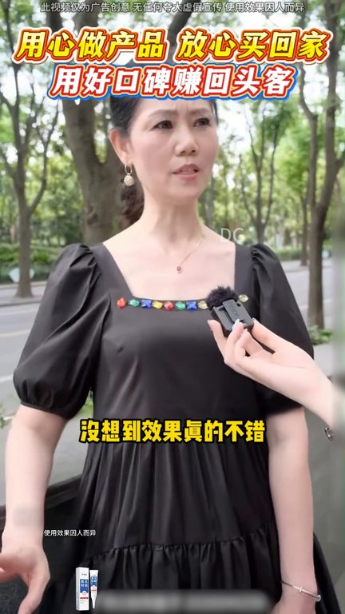
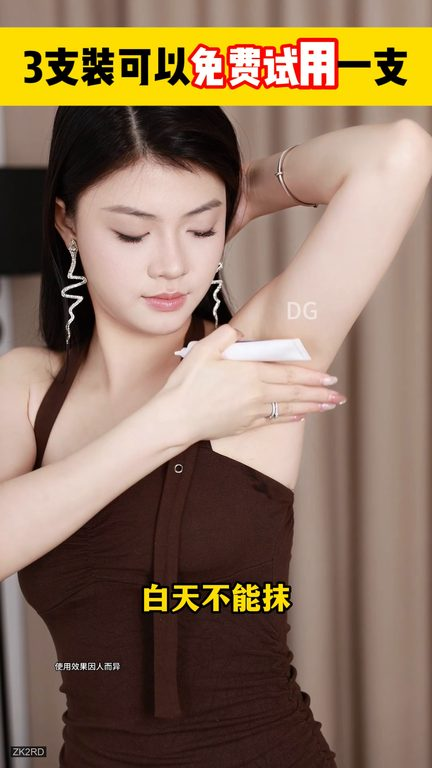
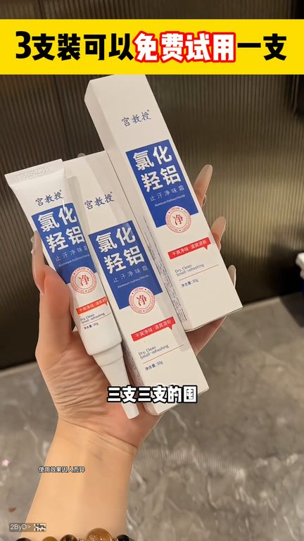

TOP 1 · 代表素材深度拆解
核心放量 点击承压
视频为原始素材 HTTPS 链接；点击后加载，建议在网络环境良好时播放。
11.3万素材消耗
0.83%CTR
21.7%类目消耗占比
-0.64pp较类目均值
表现判断
该素材是类目内第 1 名，属于“核心放量”；CTR 低于类目均值。消耗体现承接规模，CTR 体现首屏与定向效率，两项应结合判断，不能仅以单指标下结论。
表达标签
口播三段式证据
开场钩子你看这就是长期放任胡臭不管不顾的夜下如果夜下是这种情况你就用它如果是这样的你也试试用它来看看哦这什么啊好舒服呀这三只你用完我敢让你贴着鸽子窝给我使劲的闻你要是还能闻到一点意味
中段论证想着也不吃亏就抱着试试的心态卖了没想到效果真的不错真的推荐你们去试试如果你的夜下总是湿湿的那就跟着工教受走如果你的夜下味道刺鼻难闻更得跟着工教受走就是这个丑丑的国祸如果你一旦出现这种情况这个你拿回去涂到时候用手去扣自己的鸽子窝然后放在鼻子上面闻这已经是我第三次推荐它了能够让我反复去推荐的东西肯定错不了好产品自己会发光给大家推荐这个工教授家的敬味霜它里面添加了…
结尾转化不用不敢抬胳膊这样一不说每一人会知道它这种乳霜自己很好推开一点都不黏膩不是你相盖之后就混合那种味道既然审核这么严格还敢把这几个植鹰带包装上你就知道它的实力了它捅上去就是冰冰凉凉的很舒服我人家还就是一股淡淡的薄荷味我每次都蹭活动三支三支的图如果你是因为这里不敢抬胳膊脱外套之后都可以去试试
有效点
- 消耗占比 21.7% 说明具备投放承接能力，但 CTR 较类目均值低 0.64pp
- 包含使用或实测表达，能够把抽象卖点转化为可感知证据
迭代动作
- 重做前 3–5 秒：结果前置、缩短背景铺垫，并把核心人群直接写进首屏字幕
- 视频时长偏长，建议剪出 30–45 秒短版，仅保留钩子、两项证据和一次 CTA
- 促销口径与资质信息保持同屏可验证，结尾只保留一个明确行动指令
合规关注

钩子建立 · 4.2s

场景/问题展开 · 31.6s

卖点证据 · 72.8s

转化收口 · 100.3s
查看完整口播摘要
你看这就是长期放任胡臭不管不顾的夜下如果夜下是这种情况你就用它如果是这样的你也试试用它来看看哦这什么啊好舒服呀这三只你用完我敢让你贴着鸽子窝给我使劲的闻你要是还能闻到一点意味你听好了我履历群只敢卖物美驾连的东西我也是在网上看到那个很火的履历群他说带回去用了不满意直接退想着也不吃亏就抱着试试的心态卖了没想到效果真的不错真的推荐你们去试试如果你的夜下总是湿湿的那就跟着工教受走如果你的夜下味道刺鼻难闻更得跟着工教受走就是这个丑丑的国祸如果你一旦出现这种情况这个你拿回去涂到时候用手去扣自己的鸽子窝然后放在鼻子上面闻这已经是我第三次推荐它了能够让我反复去推荐的东西肯定错不了好产品自己会发光给大家推荐这个工教授家的敬味霜它里面添加了高浓度的绿化枪铝以及冷冬花等多种植物萃取都是主打夜下意味的原料它不能随便磨它是睡前磨白天不能磨因为它特别的猛不严重的你真的不要碰它然后这里不出汗没有味道千万不要去用它不要用过工教授姐妹都知道什么叫清清爽爽不用不敢穿吊带不用不敢抬胳膊这样一不说每一人会知道它这种乳霜自己很好推开一点都不黏膩不是你相盖之后就混合那种味道既然审核这么严格还敢把这几个植鹰带包装上你就知道它的实力了它捅上去就是冰冰凉凉的很舒服我人家还就是一股淡淡的薄荷味我每次都蹭活动三支三支的图如果你是因为这里不敢抬胳膊脱外套之后都可以去试试